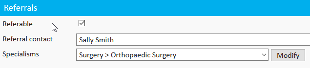
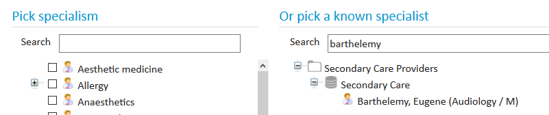

Meddbase is designed to handle a wide range of referral types, making it a versatile solution for managing patient care pathways. Whether your organisation needs to receive external referrals, send referrals to external providers, or manage internal referrals within your practice, Meddbase accommodates these processes seamlessly.
External referrals can be sent to other organisations, ensuring patients receive the necessary care outside your practice. Similarly, internal referrals enable efficient coordination among consultants and clinicians within your organisation. By advertising referral types and managing consultant availability, Meddbase ensures referrals are handled accurately and efficiently.
This article explains how to configure Meddbase to:
In order to receive a referral electronically, you must first advertise the types of referrals your company can receive, together with the consultants who can deal with the referrals. This allows users of Meddbase within primary care centres to locate your company and select the consultant they wish to refer to.
Search for your company using the Start Search bar, then click on your company name to access your company record. The search will start once you begin typing your company name, so there's no need to press Enter.
Click 'Company details' to begin editing the company details.

Click 'Save' to save your changes.
If you wish to allow clinicians to refer directly to consultants, you must now register the consultants as Meddbase users (see registering consultants to receive referrals). This is particularly useful if the referrer is looking for the consultant by name, as by registering the consultant, they will appear in the search results:

If you wish to send emailed referrals out of Meddbase, to another healthcare provider, you would need to have that company set up in your chamber, and follow the above instructions to make the company referrable.